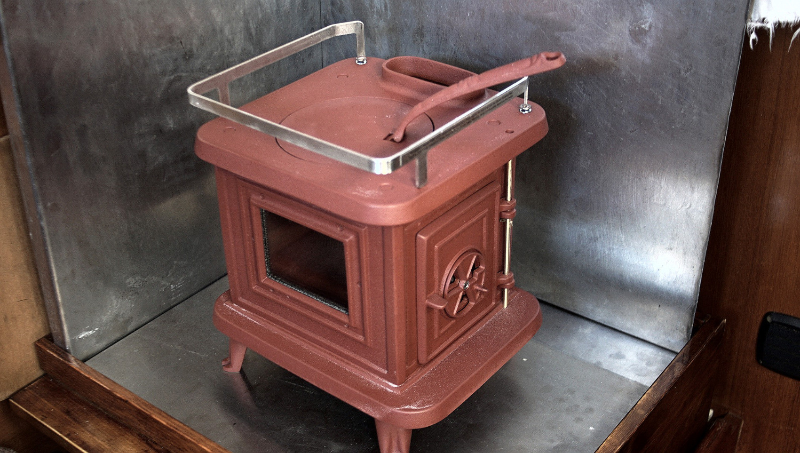
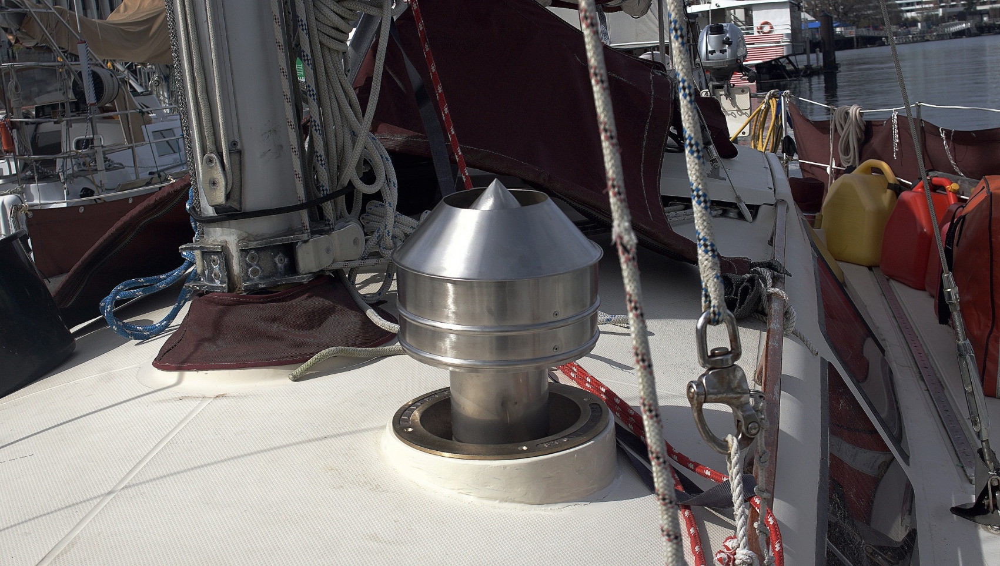

pino

Our sailboat is a Yamaha33, a 1982 masthead sloop fiberglass sailboat. Pino is the name of an android in the anime Ergo Proxy. Hundred Rabbits is inspired from the name of the sailboat in that same show, the Centzon Totochtin.
- Name: PINO
- Builder: Yamaha
- Year: 1982
- Length: 33'(10 meters)
- Engine: Yanmar / diesel(13 HP)
- Hull: Fiberglass
- Keel: Fin
anchoring setup
We carry 3 anchors onboard. We have a Bruce 10 kg (22 lbs), and a Rocna 10 kg (22 lbs) and 15 kg (33 lbs). We carry 30.5 m (100 ft) of chain, with 61 m (200 ft) of 3-strand nylon.
We anchor using a snubber to lighten the load on our chain stopper. Our boat doesn't have a windlass, we haul the anchor up by hand. The chain stopper helps catch the chain so it is easier to hoist back up.
water storage
Our main water tank carries 170 L (45 US gal), our secondary has 50 L (13 US gal), while an additional 100 L (26 US gal) is stored in jerry cans. When it is not possible to dock at a marina, we use smaller(4x10L|4x2.6 US gallons) jerry cans to ferry water from shore. While it requires more trips, the lighter containers are less prone to breakage.
energy setup
We have 2 Solar Panels(2x90 W). For additional power, we carry a small portable generator as a backup to our solar. Our Honda’s 1,000-watt generator is compact, fuel-efficient, lightweight, and can run for 7.1 hours on 2.7 liters (0.7 US gal) of gas. Our boat has a 75 AMP Balmar alternator, but it is only used to charge the batteries on cloudy days. We consider these options as backups, as redundancy to our main source of power, solar.
We have a total of 464 Ah. Our flooded-cell battery banks consists of a series configured starter bank (2x6 Volt Cells) and a series-parallel configured house bank (2x6 V cells). Both sets are identical, equalling 12 V each. Because they're identical, we often use both as house banks.
We don't have a windlass, pressure faucet, water heater or a fridge. Because of this, it's easy to keep our power consumption low, reducing our need for extra solar, keeping our costs down and reducing the amount of things that can break, or fail.
woodstove
In early 2021, we bought and installed the 'laptop' of cookstoves, a cast iron Sardine woodstove by Navigator Stoveworks. This stove is designed specifically for boats, its stove pattern sets have their roots in Nova Scotia, Canada. Starting in 1891, the Lunenburg Foundry produced marine equipment for yachts and commercial vessels. They ceased production in the early 1990's, and Navigator Stoveworks utilized their foundry patterns and continued to produce them. We are glad they did, as they are wonderful little stoves.
The Sardine is 30x30x28 cm (12 x 12 x 11 in), and weighs 16 kg (35 Lbs). It outputs 7,500-18,000 BTUs [ 2-5 Kw.]
As of April 2021, we are still installing it aboard Pino. The above photos are not the final installation.
For additional details on our equipment and boat, see the technical details.